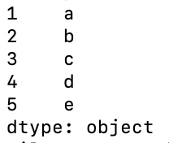
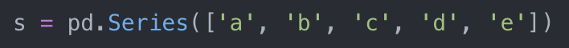
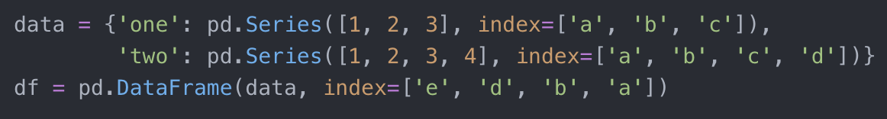
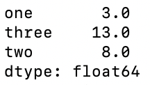

All About Python Pandas
Hilary Zen
Why Use Pandas?
Python Pandas is a very popular library used for data manipulation and analysis. It takes data and creates a Python object with rows and columns that is much easier to work with, compared to 2D arrays or dictionaries.
Its advantages include:
- Better data representation, through data structures that resemble familiar spreadsheets
- Efficient for large datasets
- Good at handling messy data
- Easy to read and output data from various sources
- Built-in methods for analysis
- Easy to incorporate into Flask applications
- Gives access to more advanced features, like 3D graphs and plots
Installing Pandas
After successfully installing Python and Pip on your computer, you can run pip install pandas in the terminal to get the Pandas packages.
To start using Pandas in your code, add the line import pandas as pd at the top of your file.
Series
A Series is a one-dimensional labeled array that stores data and matching index values, like a regular dictionary. Here, the indexes are the "keys" and the dataset makes up the "values".
The line of code above creates a Series with the data you pass in, which can be a dictionary, array, or even a value. The index is the list of axis values to match your data, and is optional.
The code block below shows two different ways of creating the same Series, which is shown on the right.


If you don't provide an index, Python will automatically assign one starting from 0.

You can populate an entire Series with one value, but you will need to provide an index to determine its length.
In addition, you can splice them, get certain rows by key or value, and perform operations on them.
Dataframes
A DataFrame is a 2D labeled data structure. In addition to data, you can also pass row labels and column labels as the index and columns arguments.
The three code blocks below all produce the same DataFrame, shown at the bottom.

Python Pandas handles messy data extremely well. If you pass in two Series with different lengths, empty cells will be automatically assigned NaN (Not A Number).
When creating the dataframe, you can easily choose and reorder the rows and columns you want to display, by passing in an array of labels to the index and columns arguments. As the first example shows, we can even choose to display rows that aren't in the DataFrame yet.

Adding Data to DataFrames
Columns
DataFrames make it very easy to manipulate columns. In the code below, we create a new DataFrame and can choose one of its columns.
We can also create new columns through mathematical operations, as we do for 'three' in the code below, or through booleans.
Lastly, we can delete columns by using del or the method .pop(), as shown below.
Rows
Pandas allows you to do similar things with the rows of a DataFrame. Below is a code snippet and the Dataframe that is produced.
The loc method allows you to find rows based on the index they have. In the code above, df.loc['b'] returns the row labeled with b, as shown below with the column names on the left and the values on the right..
The iloc method allows you to select rows as if they were items in an array, using an index that starts from 0. Thus, df.iloc[2] selects the third row in the dataframe (the first row corresponds to index 0, and the second row corresponds to index 1).
Adding New Rows
In the code below, we create a dataframe with the columns out of order. The result is shown to the right of the code.
However, we can reorder the columns using an array, which we do with df[['one', 'two', 'four']]. The new DataFrame is below.
Adding or changing data is a very important part of working with dataframes. The code below explores several ways we can do this.
In the first line, we add a completely new row, g, and pass in the new values through an array. In the third line, we use the iloc method to replace the values in the first row of the dataframe with 10, 11, and 12. Both changes are shown in the dataframe below.
In the fifth line, we create a different dataframe using the append method. Instead of an array, we pass in a dictionary with the columns as the keys and their corresponding data as the value. However, we must use ignore_index = True, which disregards the a to g index we have already established. Instead, it is replaced by the default index, which starts from 0.
Combining DataFrames
Below are two dataframes, with the exact same row indexes and columns, but different values.
If we call the left one df and the right one df2, we can use the df.append(df2) method to add the rows of the second dataframe to the end of the first one.
If we want to add the columns instead, we can use pd.concat([df, df2], axis=1) instead.
Reading Data Into Pandas
Pandas makes reading data from a CSV very easy. Suppose you have the below data, with column names at the top and three rows of data.
In the code below, we use the read_csv method to create a new dataframe.
When we print that df, we see that the first row of the CSV has been turned into the column indexes. The rows are labeled with the default index, starting from 0.
After reading in the data, we can change it and use the to_csv method. In the new CSV on the right, we can see that the column names are still on the first line, and the row indexes have been added.
Using SQL databases is not much harder. After setting up a connection, the method read_sql_query allows you to recreate the table as a dataframe.
After working with the dataframe, to_sql allows you to output the dataframe back into the SQL database.
Filtering Dataframes
In the code below, we first create a dataframe, which is shown to the right.
The filtered dataframe is created by selecting all the rows which have values greater than 8 under 'two' column. We can do this by using a boolean expression inside the brackets of df[], which creates a new dataframe with the rows that fit the criteria of df['two'] >= 8.
We can also combine multiple conditions, as shown as the bottom of the code. For the boolean dataframe, we select all the rows with an even value under the 'two' column and a 'three' value that is greater than 12. This removes row d.
Data Cleaning
In the code below, we start with a very messy dataset, resulting in many NaN throughout the dataframe.
We can check which values in a dataframe with the isnull() method, which replaces every value with True, if they are NaN, or False. The notnull() method does the opposite. In addition, we can use dropna() to get rid of any rows that contain a NaN, or add axis=1 as an argument to remove of columns instead. If we want to replace all the NaN values instead, usually with 0, we use the fillna method.
The replace method allows us to change all instances of a specific value. In the first example, all values in row c, which were previously 3, are now 8. If we pass in arrays of values as arguments to the method, we can replace several values at the same time. In the second example, all the 3s become 8, all the 4s become 9, and all the 5s become 10.
Functions for Statistics
Pandas contains many basic math functions, which makes it very helpful for data analysis. Below is the original dataframe created by the code snippet.
By default, they operate on columns, as shown as the output on the left, which lists the mean of values for each column. However, by adding 1 as an argument to the mean function, we can get the average for each row instead as shown on the right.

Iterations for DataFrames
To iterate over a dataframe, the basic for loop is not effective. As shown below, looping over the dataframe only gives you the column names.
To get each column of the dataframe, we must iterate over df.items(). There are two variables, col and ser. Col represents the column name, and ser is a series that contains the values of the column. The indexes of this series are the row names. The same applies if we want each row of the dataframe, except that we use df.iterrows() instead.